Conteúdo previsto:
Introdução:
Controladores com Ação Integral
Objetivos:
Exemplo: Observe as próximas figuras e acompanhe o raciocínio:
Seja um sistema que resulta no seguinte RL:
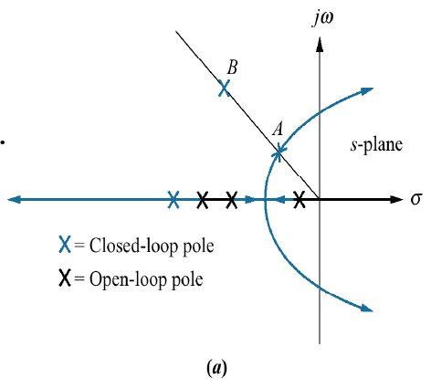
seu comportamento temporal correspondente seria:
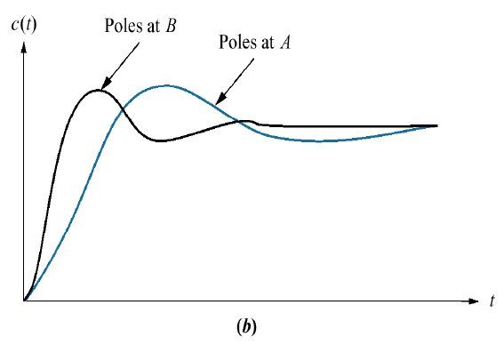
Note:
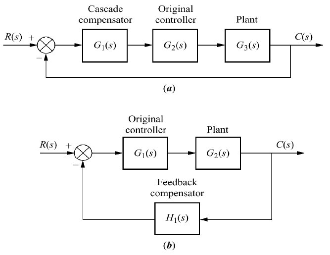
2 configurações:
a) Em cascata;
b) Presente na realimentação
2 maneiras de melhorar o erro estacionário:
Compensandor PI (Proporcional + Integrativo):
Compensador por Atraso de Fase (Lag):
Vamos trabalhar com a seguinte planta:
\[ G(s)=\dfrac{1}{(s+1)(s+2)(s+10)} \]
Note que é um sistema tipo 0, sem integrador, portanto, pela teoria do erro, pode-se esperar erro limitador para entradas degrau enquanto não for acrescentada alguma ação integral ao sistema.
A idéia é:
Comparando resultados obtidos.
Note que o RL para os 2 primeiros controladores resulta nos seguintes RL's:
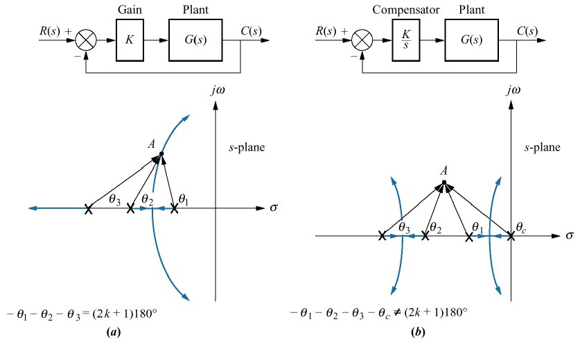
Note que o simples fato de acrescentar um pólo na origem modificou o RL original (a) para o RL mostrado na figura (b).
O ponto A na figura corresponde à determinada posição desejada para os pólos de MF. Para definir esta posição, além de sabermos o \(\zeta\) desejado, também necessitamos mais resquisitos de controle associados com tempos de resposta (\(t_s, t_r, t_p\)).
Note que se for desejado determinar com precisão a posição do ponto A na figura (a), teremos que realizar cálculos trigonométricos associados com contribuição angular provovadas pelos pólos e zeros presentes num sistema (lembrar das regras básicas de RL); algo como:
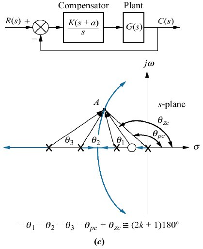
Esta última figura mostra o projeto de um PI usando contribuição angular. No caso deste controlar, sabemos à priori onde deve estar localizado seu pólo (na origem), mas não sabemos onde devemos localizar seu zero. Note pela figura, que o cálculo dos ângulos apresentados, objetiva descobrir qual o ângulo que deveria ser assumido pelo zero do PI, variável \(\theta_{zc}\). Sabe-se que para o ponto A pertencer a um traço do RL, os ângulos formados pelo mesmo devem obedecer à seguinte regra básica do RL:
\[ \sum_{i=1}^{\text{Zeros}} \theta_{z_i} - \sum_{j=1}^{\text{Polos}} \theta_{z_j}=(2k+1)180^o \]
ou em radianos (Matlab):
\[ \sum_{i=1}^{\text{Zeros}} \theta_{z_i} - \sum_{j=1}^{\text{Polos}} \theta_{z_j}=(2k+1)\pi \]
Então no caso da figura (c), usando contribuição angular, conseguimos descobrir o ângulo do zero, \(\theta_{zc}\) e assim, usando trigonometria (arco tangente) se pode determinar onde deve estar loocaliza a parte real deste zero.
O diagrama em blocos deste sistema fica:
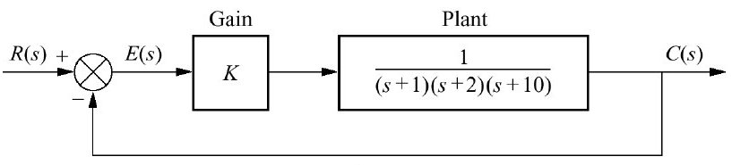
Resolvendo:
>> % Seguem comandos no MatlabResolvendo:
>> % Seguem comandos no MatlabNum primeiro momento vamos simular o seguinte diagrama em blocos:
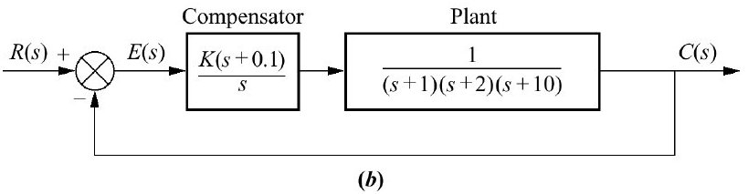
Note que o zero do controlador foi colocado (arbitrariamente) em \(s=-0,1\).
Note a origem da equação do PI:
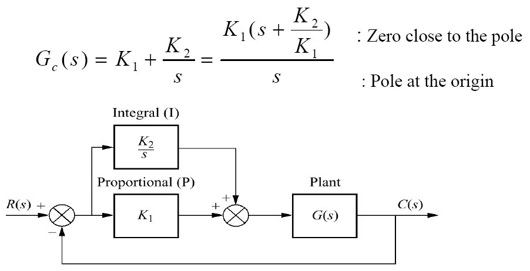
Note que \(K_1=K_p\) (ganho proporcional) e que \(K_2=K_i\) (ganho integral).
Resolvendo:
>> % Seguem comandos no MatlabMais tarde, numa próxima etapa, vamos modificar um pouco o controlador PI, para um controlador por Atraso de Fase (Lag), como mostra a figura à seguir:
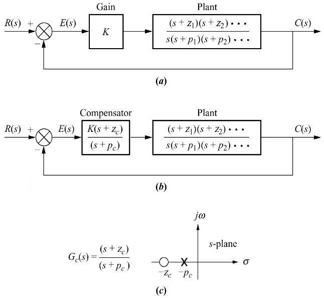
Note que neste caso, o pólo do controlador já não está sobre a origem do plano-s, mas muito próximo da origem do plano-s, o que implica num comportamento semelhante ao de uma ação integral.
Segue um "compêndio de equações" baseadas numa resposta típica sub-amortecida para sistemas de MF de segunda ordem.
As equações à seguir valem para um sistema do tipo:
\[ FTMF(s)=\dfrac{\omega_n^2}{s^2+2\zeta\omega_n s + \omega_n^2}=\dfrac{b}{s^2+as+b} \]
Considerando pólos complexos em MF (\(0 < \zeta < 1\)) teremos:
Pólos de MF localizados em: \(s=-\sigma \pm j \omega_d\), onde \(\omega_d=\omega_n \sqrt{1-\zeta^2}\).
A resposta temporal fica:
\[ y(t)=1-\exp\left( -\zeta \omega_n t\right) \left[ \cos\left( \omega_d t\right) + \dfrac{\zeta}{\sqrt{1-\zeta^2}} \sin \left( \omega_d t\right) \right] \]
O overshoot fica:
\[ \%OS=\exp \left( \dfrac{-\zeta}{\sqrt{1-\zeta^2}} \right) \times 100\% \]
isolando \(\zeta\) em função de \(\%OS\):
\[ \zeta=\dfrac{-ln \left( \%OS/100 \right)}{\sqrt{\pi^2+\ln^2 \left( \%OS/100 \right)}} \]
ou \(\zeta=\cos(\alpha)\), ver figura à seguir:
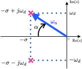
Outras equações relacionando medidas temporais:
\[ t_p=\dfrac{\pi}{\omega_n \sqrt{1-\zeta^2}}=\dfrac{\pi}{\omega_d} \]
\[ t_s=\dfrac{-\ln \left( 0,02 \sqrt{1-\zeta^2} \right)}{\zeta \omega_n} \]
\[ t_s=\dfrac{4}{\zeta \omega_n}=\dfrac{4}{\sigma} \quad \text{ para: } 0 < \zeta < 1 \]
\[ t_r=\dfrac{0,6+2,16 \zeta}{\omega_n} \]
O que pode ser simulado no Matlab via função ord2(wn,z):
>> OS=20; % overshoot de 20%
>> ts=2; % tempo de assentamento de 2 segundos
>> zeta=(-log(OS/100))/(sqrt(pi^2+(log(OS/100)^2)))
zeta =
0.4559
>> wn=4/(zeta*ts) % resposta em rad/s
wn =
4.3864
>> [num_mf,den_mf]=ord2(wn,zeta)
num_mf =
1
den_mf =
1.0000 4.0000 19.2409
>> ftmf=tf(num_mf,den_mf);
>> zpk(ftmf)
ans =
1
------------------
(s^2 + 4s + 19.24)
Continuous-time zero/pole/gain model.
>> % comprovando a resposta temporal
>> step(ftmf)
>>> polos_MF=pole(ftmf)
polos_MF =
-2.0000 + 3.9040i
-2.0000 - 3.9040i
>> figure; pzmap(ftmf)
>> axis([-4 0 -5 5])Que gera o gráfico:
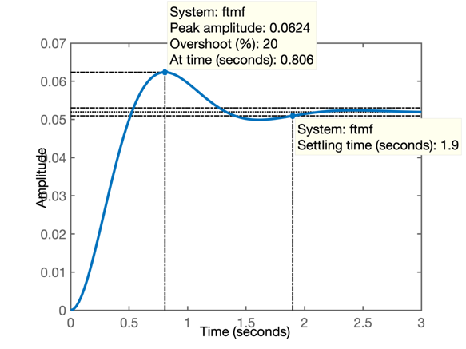
que refleto o que ocorre no domínio tempo quando os pólos abaixo são submetidos à uma entrada degrau:
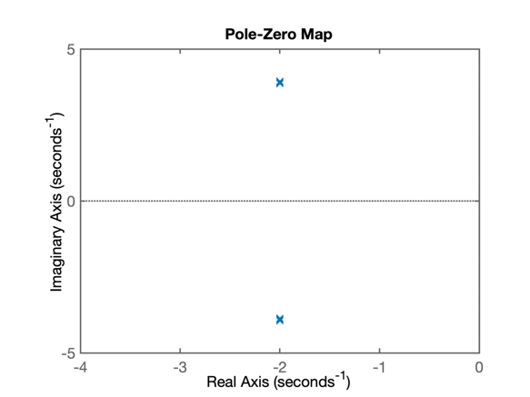
Fernando Passold, em 12/05/2020